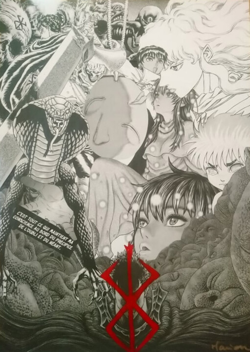
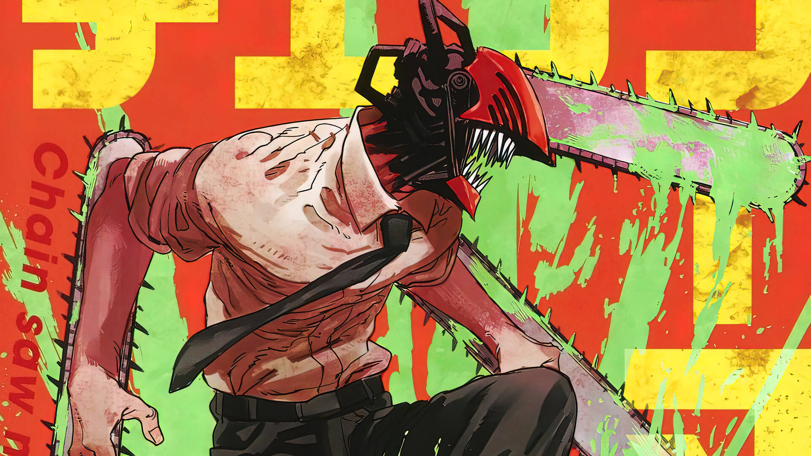
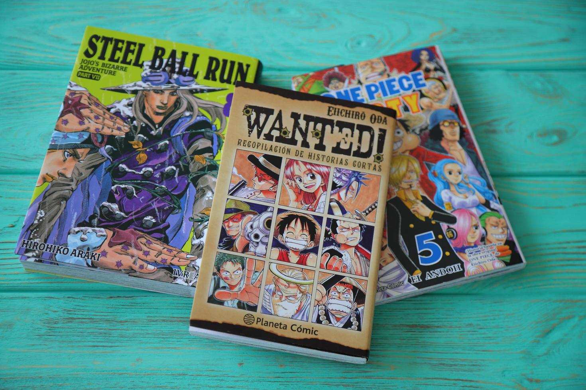

Mangas

Berserk: Continuação após Miura
Como a obra-prima de Kentaro Miura está sendo continuada após o falecimento do autor.
Ver mais...

Chainsaw Man: Análise do Arco Final
Analisamos os capítulos finais de Chainsaw Man e o impacto na indústria de mangás.
Ver mais...

Top 10 Mangás de 2025
Nossa seleção dos melhores mangás lançados até agora em 2025, com surpresas para todos os gostos.
Ver mais...